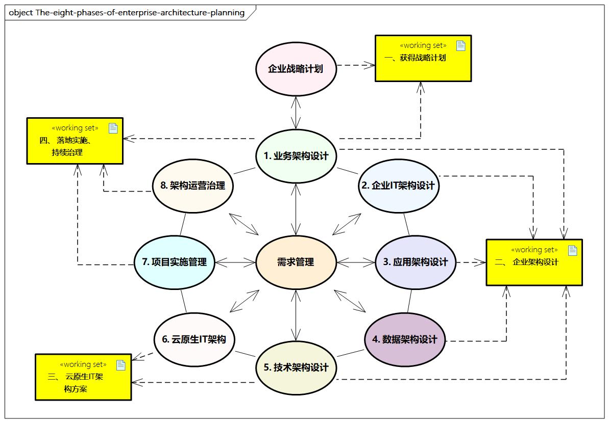

企业架构规划
企业架构规划的迭代和阶段
企业架构规划可分为八个阶段，所有阶段都围绕需求管理这个核心，需求管理过程是一个动态的过程，关注企业痛点的识别和需求的输入和输出。从生命周期和内部的迭代，这八个阶段又可分为四次迭代，相关描述如下所述。

图例：企业架构规划的四次迭代和八个阶段
迭代一：获得战略计划
准备阶段架构愿景：这是做好企业架构规划的准备阶段，关注企业愿景、范围、业务驱动力及准备情况评估，获得高层的承诺和支持，建立企业架构的基本框架、策略和原则等。
这个阶段与业务架构设计紧密相连，可以反复进行迭代。
迭代二：企业架构设计
阶段一，业务架构设计
创建业务架构，独立于技术，关注企业的价值链、业务能力、业务流程等，是企业架构的基础。业务架构也涉及企业组织和治理间的结构和交互关系。这个阶段也要识别业务需求，分析现状和目标之间的差距，明确业务架构和业务模型。
阶段二，企业IT架构设计
顺接业务转向IT的重要架构，内部又分为应用架构、数据架构和技术架构，明确对应的场景和模型，最终明确IT架构。
阶段三，应用架构设计
描述对应的应用及系统的规划和设计，包括应用间的相互关系、核心流程的呈现，应用架构也包括系统、产品、解决方案等层面的系统级抽象。
阶段四，数据架构设计
描述企业架构的数据模型、数据分布、数据资产之间的结构和关系，确定数据访问及持久化机制，最终明确数据架构。
阶段五，技术架构设计
进行技术体系设计，包括开发体系、测试体系、运维体系，以及基础设施、中间件、网络、通信等综合的企业IT软硬件技术架构。
迭代三：云原生IT架构方案
阶段六，云原生IT架构
承接技术架构设计，应用先进的云原生核心技术，如容器、微服务、Service Mesh、Serverless、DevOps等，构建云原生应用平台和对应的云原生基础设施，完成云原生数字化转型的方案。
迭代四：落地实施、持续治理
阶段七，项目实施管理
包括架构迁移和实施管理所需的各项活动，对项目进行成本和收益分析、风险评估、制订详细的实施计划，并通过先进的敏捷开发、DevOps等理念进行项目管理。
阶段八，架构运营治理
包括日常运营和架构治理的保障，建立治理机制，构建架构成熟度模型和评估机制、架构委员会管理机制、架构原则规范制约机制等，促进组织架构优化、人才能力管理，完成架构持续演进与架构资产管理。
每个阶段的关注点有所不同，特别是企业架构规划阶段，企业基本可以按照以下方法来创建和管理企业架构。
- 选择参考模型、视角和工具
- 描述基线架构
- 描述目标架构
- 进行差距分析
- 定义候选路线图
- 解决对架构愿景的影响
- 进行正式干系人评审
- 架构定稿
- 创建架构定义文件
业务架构规划
企业业务类型繁多，业务架构强调从战略计划业务逻辑转化，通过对业务能力的识别和管理，优化业务流程，共同完成业务整体性蓝图。企业可以将组件化业务模型（CBM） 作为业务模型化的指导，以此来整合和指导业务流程。
组件化业务模型涉及以下步骤。
- 通过战略分析与评估，将企业战略转化为具体指标及实现指标所对应的关键能力。
- 从企业当前组织架构、业务和产品服务等角度，以目标、资源、活动、治理、服务五个维度对企业当前业务能力进行抽象，形成业务能力组件地图。
- 分析业务组件服务，梳理当前的所有流程，形成流程和服务体系。
- 结合战略分析，得出企业具体需要的核心业务能力组件。
- 寻找热点业务能力组件，对业务能力组件进一步从组织、流程、IT、治理、资源等维度进行分析。
IT架构规划
通过业务架构的规划，企业业务以结构化的方式定义，为结构化的企业IT架构的规划提供了支撑的基础。IT架构规划如下所示。
应用架构的规划
根据领域设计来进行设计，可以分为领域、实体、值对象、领域服务、应用、应用组件、功能组件、服务等多种概念，进而完成领域的识别、服务的划分，以及服务对业务能力和流程的覆盖和映射，并通过层次化的划分（如表现层、应用层、服务层、基础设施层等进一步的分层），进一步指导应用、系统和相关功能的设计，包括接口、范围、实体的关系等，在此过程中可以借鉴和参考DDD（领域驱动设计）、服务化、微服务等相关理论知识。
数据架构的规划
要从企业的整体、长期的数据层面出发，构建企业数据的规范化、一致性、准确性和完整性，并基于此挖掘数据的价值，支撑企业数据管理和经营决策分析。
在此过程中，企业要通过数据标准、数据治理、管控流程和技术工具等制定规划，并协同业务架构、应用架构、技术架构层面的数据形成统一、完整的数据标准，形成相应的数据模型、数据关系及进行对应的数据管理。
技术架构的规划
通过构建企业开发平台、运维平台来协助系统的统一管理，助力上层应用架构、数据架构的落地，结合云原生技术、容器化技术、敏捷交付、精益管理等构建开发和运维一体化的平台，并结合项目管理来推进数字化的落地实施